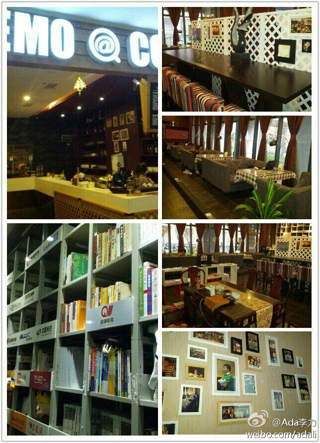
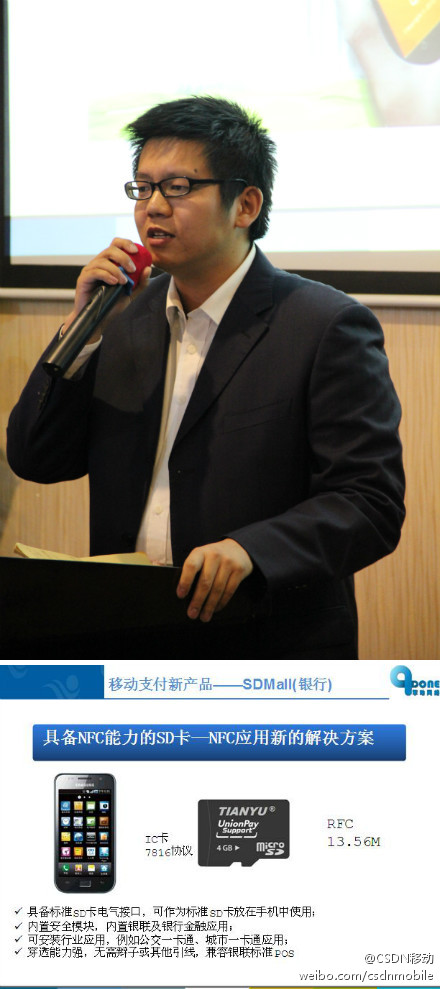

回复@OpenERP_Jeff:我倒是认同月嫂有助于解决两代人之间的育儿矛盾。 //@OpenERP_Jeff:请过月嫂，物有所值。26天，每天只睡4小时，孩子大人弄得有条不紊。女人坐月子生病就是一辈子，这钱没必要省。最大的用意，老人和新人育婴观念不一致，请第三方顾问来，听她的。 //@Ada李力:@新浪育儿:【南昌遭遇月嫂荒月薪八千还需预订】过年请月嫂，工资至少6000元，还得再加1000元过年费--这是南昌一家政公司的报价。记者调查，年底正是月嫂需求旺季，而现在的月嫂需求缺口一年比一年大，多数人觉得月嫂太累责任太大。网页链接
已在武汉DEMO COFFEE, 地方环境很不错，其它城市咖啡馆如何？//@CSDN李涛:回复@郭静Jenny:@刘江总编 正前往南京站；@CMDN炫姐姐 正前往深圳站；@Ada李力 正前往武汉站；@CSDN李涛 正前往厦门站；@芥末米花Fighting 前往成都站；@懒惰的小蔷 留守北京站。//@CSDN李涛:快来关注“六城联动，翼起来！”@福尔摩斯_MM:还有一个月，2012.12.21，该吃吃，该喝喝
#六城联动翼起来#武汉站在DEMO COFFEE，咖啡馆装修风格不错，入口的成排书架有特点。而摆放的红酒架有向高帅富靠拢的嫌疑，可能是毗邻HP和华为的缘故。 我在#光谷软件园# 武汉·光谷软件园 
回复@周金桥:我也觉得这个互动环节气氛最好。 //@周金桥:分享不错，我喜欢DemoCoffee此刻的分享，我赞同传统互联网、移动互联网的发展规律。 //@DemoCoffee: Demo为嘉宾提供了西点，松饼，小果盘，为回答问题的朋友提供了文化衫，欢迎大家互动 //@asmcos_jeap: 这是什么好吃的。@Ada李力:#创翼全国 六城联动#武汉站，@DemoCoffee 不但提供了场地，饮品，小食，还提供了几件T恤做奖品，感谢呀。
钟海英演讲完问答环节，说可以给现场一位开发者一周智汇云平台的推广机会。现场听众没那么踊跃让她很诧异，因为那等于是免费的广告位。下一位嘉宾何萌倒是表示有浓厚兴趣。@CSDN移动:#创翼全国 六城联动#武汉站，华为智汇云合作总监钟海英，华为的多种类终端满足了各种消费者的使用需求。在移动端方面，华为通过统一的Emotion UI风格呈现给用户，提升用户对内容的认知和粘性。总体来说，华为通过云服务＋EMUI＋终端芯片三方面能力来提升用户体验。
擎动网络带来了产品，有些听众在刘志远演讲后就围着看产品演示，还有现场应聘的。[呵呵]@CSDN移动:#创翼全国 六城联动#武汉站，擎动网络副总经理刘志远提供了另一种NFC支付方案：通过具备NFC能力的SD卡。具备标准SD卡电气接口，可作为标准SD卡放在手机中使用，而且13.56MHZ通讯频率，支持主流pos和读卡器设备。他认为NFC支付将会大行其道，其安全性将逐步提升，逐渐引入更多金融硬件级别的安全防护。 
回复@DemoCoffee:期待下次合作。 //@DemoCoffee:活动很有感觉,2012移动互联网应用创新大赛开放日中场休息来张大合影，圆桌互动嘉宾给移动互联网创业者的心态分享，cc@武汉的詹凯 @严重捷 @Ada李力 @伟丶尐宝csdn @CSDN李涛 @CSDN移动 @蒋涛CSDN@赵红良:【给创业者干货】@百纳汪强兵 保持敏锐，前沿潮流趋势，坚持，不要耍小聪明，比你聪明有很多人@晓天_Noame 不要单独的执着于技术，要从综合产品运维，保持创业心态@王斌耀-心有乾坤 创业多关注生活 多实践@MullHe 正确认识到社会好的黑暗面的认识，世界是公平的！cc@DemoCoffee @湖北互联网联盟
回复@bashiwu:多谢参与哈。 //@bashiwu:社区总监线上活动厉害，线下活动主持也很强啊，大家都被你感染的活跃了，@Ada李力:#创翼全国 六城联动#武汉站，本来只定十分钟的互动话题： 移动互联网的盈利模式。台上四位嘉宾的分享都很有料，台下听众也问了好问题，互动时间延长到半个小时。
回复@Adela可爱多:Adela正在以专家身份进入OpenStack社区，出了不少翻译文章和问答贴了。 //@Adela可爱多:网页链接 把此帖整理了一下， 顺带上海#C3沙龙# 的发行版OS测试TEMPEST分享slides地址 网页链接 @Ada李力 @CSDN包研 @CSDN云计算---:该账号因被投诉违反《微博社区公约》的相关规定，现已无法查看。查看帮助 网页链接
 武汉·武汉天河机场1号航站楼(到达)
武汉·武汉天河机场1号航站楼(到达)